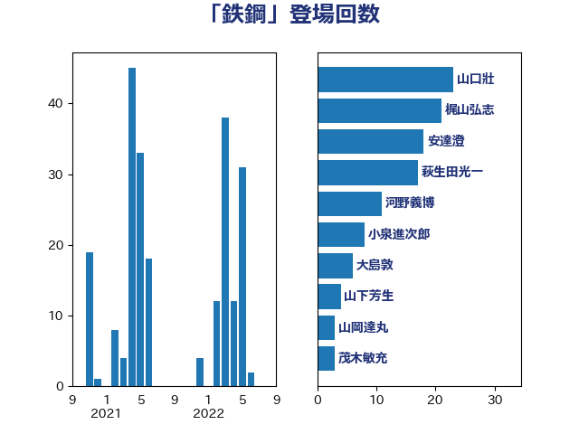

単語「鉄鋼」

| 山口壯 | 自由民主党 | 23 回 |
| 梶山弘志 | 自由民主党 | 21 回 |
| 安達澄 | 無所属 | 18 回 |
| 萩生田光一 | 自由民主党 | 17 回 |
| 河野義博 | 公明党 | 11 回 |
| 小泉進次郎 | 自由民主党 | 8 回 |
| 大島敦 | 立憲民主党 | 6 回 |
| 山下芳生 | 日本共産党 | 4 回 |
| 山岡達丸 | 立憲民主党 | 3 回 |
| 茂木敏充 | 自由民主党 | 3 回 |
| 青木愛 | 立憲民主党 | 3 回 |
| 伊藤孝恵 | 国民民主党 | 2 回 |
| 吉良州司 | 無所属 | 2 回 |
| 大塚耕平 | 国民民主党 | 2 回 |
| 浜野喜史 | 国民民主党 | 2 回 |
| 若松謙維 | 公明党 | 2 回 |
| 赤羽一嘉 | 公明党 | 2 回 |
| 上田清司 | 国民民主党 | 1 回 |
| 佐藤啓 | 自由民主党 | 1 回 |
| 小沼巧 | 立憲民主党 | 1 回 |
| 山口晋 | 自由民主党 | 1 回 |
| 山添拓 | 日本共産党 | 1 回 |
| 徳永エリ | 立憲民主党 | 1 回 |
| 新妻秀規 | 公明党 | 1 回 |
| 森本真治 | 立憲民主党 | 1 回 |
| 猪口邦子 | 自由民主党 | 1 回 |
| 田村貴昭 | 日本共産党 | 1 回 |
| 石井正弘 | 自由民主党 | 1 回 |
| 竹内真二 | 公明党 | 1 回 |
| 笠井亮 | 日本共産党 | 1 回 |
| 篠原豪 | 立憲民主党 | 1 回 |
| 落合貴之 | 立憲民主党 | 1 回 |
| 鈴木義弘 | 国民民主党 | 1 回 |
| 長坂康正 | 自由民主党 | 1 回 |
| 阿達雅志 | 自由民主党 | 1 回 |
| 青柳仁士 | 日本維新の会 | 1 回 |